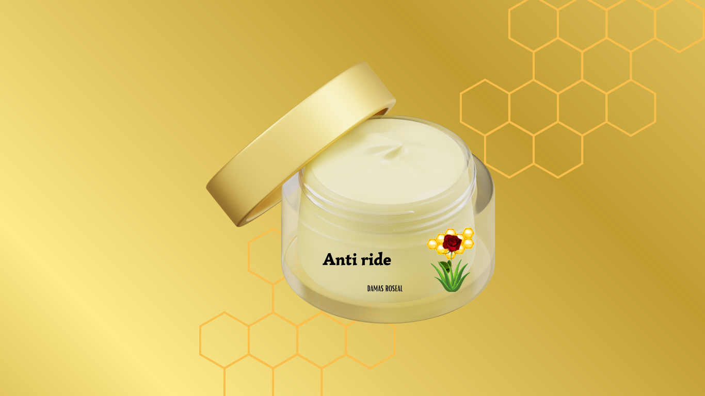

Crème pour les mains

Crème pour les Mains à la Cire d'Abeille.
Offrez à vos mains une douceur incomparable avec notre crème nourrissante à la cire d'abeille.
- Ingrédients clés : ✔ Cire d’abeille ✔ Huiles végétales ✔ Extraits naturels
- 🌿 Sans parabènes, sans silicones, sans produits chimiques agressifs.
- Idéale pour : les mains sèches, abîmées ou exposées au froid. Une texture riche qui pénètre rapidement, sans effet gras.
- Format pratique : à emporter partout avec vous !
En savoir plus sur la Crème pour les Mains
Crème Anti-rides
Crème Anti-Rides à la Cire d’Abeille
Redonnez à votre peau toute sa souplesse et son éclat avec notre crème anti-rides à la cire d’abeille, un soin naturel aux propriétés nourrissantes et régénérantes.
- Ingrédients clés : ✔ Cire d’abeille ✔ Huiles précieuses ✔ Extraits naturels antioxydants
- 🌿 Sans parabènes, sans silicones, sans produits chimiques agressifs.
- Idéale pour : les peaux matures ou en quête d’hydratation et de fermeté. Sa texture fondante pénètre rapidement, laissant une sensation de confort et de douceur immédiate.
- Utilisation : appliquez matin et soir sur une peau propre pour un effet lissant et repulpant visible.
En savoir plus sur la Crème Anti-rides